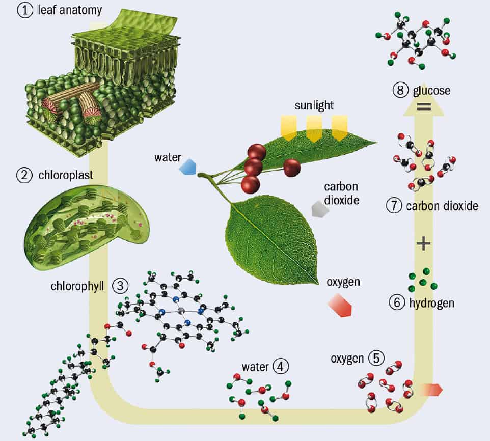

crores crores cores of atoms combine at named as a human
Atoms do a lot of fun things ,let see atoms of water
[LIQUID] If the molecule is not too hot or cold then ,they can flow around each other ,there is some force between these molecules but not enough that it can give a solid shape
[GAS] sun light heats up water ,due to increased energy ,molecules starts vibrating and the bond breaks , then they form vapours
The air we breathe contains the molecules of nitrogen and oxygen ,vapours , carbon dioxide
Some molecules are falling down : meaning vapour is cooling
There is a cosmos inside the water vapour
peramissia : lives inside water molecule , peramissia has a water gun to attack its predator .
Diliptus : is the predator of peramissia
Leaves have small holes called stomata , it takes carbon dioxide in and gives out oxygen .
Trees and live without us ,but we can-not live without trees .
Trees make food in sun light ,we cannot
Let's see how they do it .
Chlorophyll is a pigment that gives plants their green color, and it helps plants create their own food through photosynthesis.
Photosynthesis
if we get the secret of making chloroplast ,it will be another revolution .
This chloroplast uses sun's energy to break water into hydrogen and oxygen atoms . and releases oxygen moleclue as the waste product .
This is atomic scale assembly line : Most important part of moleculer industrial complex .
Sugar is made by combining carbon and oxygen
Plants also works as a battery to store energy ,they store energy in the form of sugar .
Because of this solar battery : farms ,forest ,plankten in oceans , humans and animals are alive
We can do photosynthesis in lab but as good as plants do
Photosynthesis can provide for all of our energy demans
We can reduce greenhouse by large scale photosynthesis
Tardigrades can live without water for years , can live in space , oceans ,volcanos ,everywhere
Orchid : was the first flower species on the earth ,also they have the highest variety .
fragrance : are the molecules cloud, either it is burned bread , flowers ,food or anything
Whenever i inhale them , they activate a special type of receptor cells .which sends electrical signals to my brain ,which identifies what is this smell of exactly .
Different smells brings molecules of different sizes . each smell ignites a different memeory
We are able to recognize the smell when the all factory nerves of our brain gets activated ,which is close to amegdela(this part of our brain is connected to our emotions .this is also close to hyppocampus) .
Neurons that carry signals from nose to brain has evolved over lakhs of years , this is a self defence mechanism ,which alerts us from danger .
If an animal recognizes fire through smell before getting stuck into it , will be able to pass its genes to next generations .
Everytime we brethe we inhale atleast 10 cr molecules , when we exhale these molecule they get passed to everywhere and other organisms uses it .
DIFFERENT MINERALS ARE JUST DIFFERERNT ATOMIC STRUCTURES
Carbon atom : started the life on earth :
Carbon is special because at a time is can connect to 4 types of different or same atoms ,carbon makes complex molecules
Molecules made up of carbon is called protein ,protein are essential for life .
Every living thing on earth is made up of carbon atoms . this is the difference between rocks and living things .
normally we don not touch each other , whenever we try to come close electron of one person repels the electrons of other person
Electrons surrounded a nuclei makes a force field ,that acts as shock absorber .
Normally nuclie of two atoms never touch each other ,we just feel that they are touching each other .
Nucleus is very small compared to an atom . if atom is of the size of the church ,then nucleus will be the size of a sand particle . most of the part of the atoms is empty
Lets go the nucleus of the atom , most abundand element is hydrogen .1Proton 1 Electron

Particle of the neucleus repel each other ,strong nuclear force binds them together
Gold has 79 electrons , light falling in the gold me it glow so much .
There is a limit to how many neutrons can be there in a atom ,after that it becames unstable .
Sun is a place where neucleus touch each other, sun appears solid but it is not ,sun is so hot that all of its atoms are in gaseous form

Sun is so hot because due to gravity all of its atoms came very very close , they move very fast thus too much heat .
At sun even the nucleus touches each other , sun is a nucleus fusion reactor ,because of its gravity.
At sun hydrogen combines to form helium ,and nuclear energy is released in the form of photons .
Helium is sun's nucleus ash
Sun is a medium size start , its core's temperature is just 1cr degrees .
Many stars are hotter then this ,because they are large and they have greater gravity .in these starts due to combining of helium heavier elemets like carbon and oxygen is formed
after these stars become old these elements gets mixed in space .
Many stars bigger then this becomes supernova , in every 100 years 1 star becomes supernova
Supernova have so much temperature compared to sun's core that elememnts like iron becomes much heavier and gets thrown into space
Neutrino can cross 100 light years steel wall , without being slowed . neutino rarely stikes with a substance .
Feel the heat on your face , the energy that is giving you heat (protons) has started its journey 1 cr years ago ,